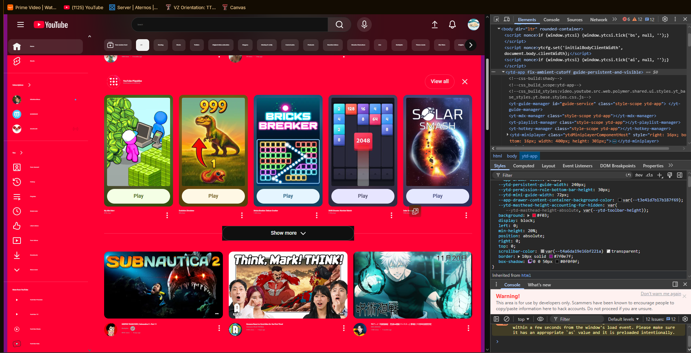

My Dev Tools Vandalism
I used browser developer tools to temporarily "vandalize" a website. Below is a screenshot showing my changes. These edits only appeared on my computer and did not affect the actual website.

Dev Tools Vandalism on YouTube
For this exercise, I used Chrome DevTools to “vandalize” the YouTube homepage. I opened the Elements panel and edited some of the main text on the page, including the site branding and section titles.
-
What text did you edit?
I changed the “Home” label to “Garrett’s House of Chaos” and renamed one of the YouTube sections to “Endless Cat Videos Only.” These edits made the page look intentionally silly. -
What CSS properties did you modify?
I modified the background color, increased the font size, added a glowing box-shadow, and experimented with borders inside theytd-appelement. These changes dramatically altered the look of the page. -
What made your edits interesting or amusing?
The combination of goofy text and loud neon styling made YouTube look like a parody version of itself. Seeing a normally clean site suddenly covered in bright colors and exaggerated fonts was genuinely funny. -
Did you understand why some changes worked and some didn't?
Yes. The changes that targeted visible elements worked immediately, while edits applied to deeper layout containers didn’t always show obvious results because YouTube uses nested components and CSS variables. Some styles needed!importantto override defaults. -
Why did you choose the changes you did?
I picked changes that were instantly noticeable and visually chaotic. I wanted the screenshot to clearly show both HTML and CSS edits, and I chose styles that would make the page look funny and obviously modified. -
Were you able to understand how the HTML and CSS worked together to make the changes you made?
Yes. Editing the HTML changed the content, while the CSS controlled how that content looked. Seeing both update live helped me understand how structure and styling interact on a real webpage. -
Do you think you have a better sense of how dev tools can be used while crafting your own webpages?
Definitely. This exercise made DevTools feel like a creative sandbox instead of something intimidating. Inspecting elements, testing styles, and seeing instant results will make debugging and experimenting in my own projects much easier.